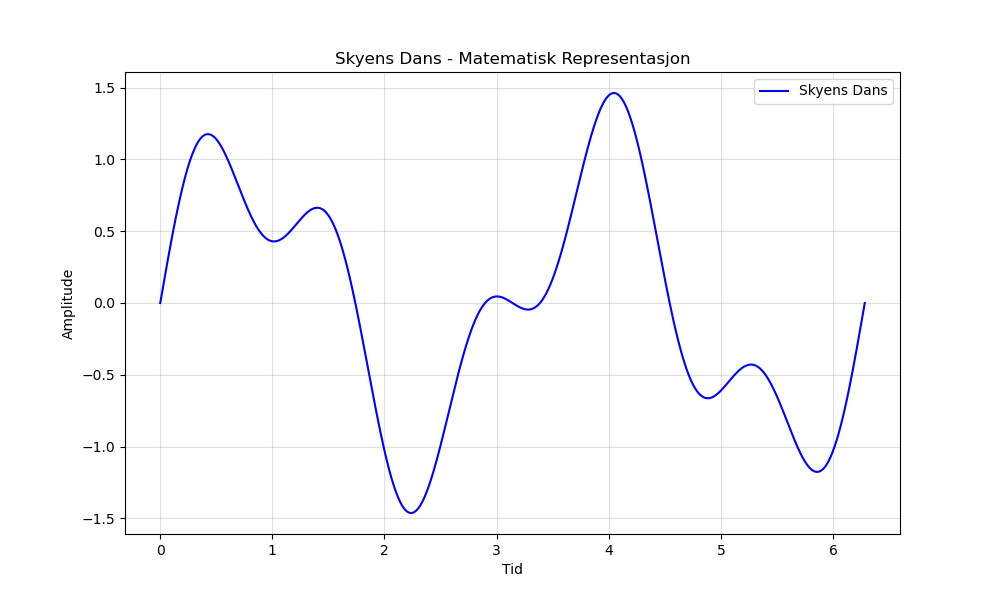

Dagens dikt
La oss lage et dikt om "Skyens dans".
---
Skyen danser i vinden så fri,
Bølger av hvitt, en evig symfoni.
Den strekker seg høyt, den faller så mild,
Kunstverk i himmelen, aldri helt still.
Hver form vi ser, et tall kan det bli,
Kodet i mønstre, matematikkens magi.
En sinuskurve, en bølge som går,
Skyens dans: Grafen består.

Kode
import numpy as np
import matplotlib.pyplot as plt
# Define parameters for the "Skyens dans"
x = np.linspace(0, 2 * np.pi, 1000) # Range of x-values that represent time
y1 = np.sin(2 * x) # Sinus curve for skyens dans
y2 = 0.5 * np.sin(5 * x) # Smaller, faster oscillations
# Combine the curves to represent the dance
sky_dance = y1 + y2
# Plot the dance of the sky
plt.figure(figsize=(10, 6))
plt.plot(x, sky_dance, label="Skyens Dans", color='blue')
plt.title("Skyens Dans - Matematisk Representasjon")
plt.xlabel("Tid")
plt.ylabel("Amplitude")
plt.legend()
plt.grid(alpha=0.4)
plt.savefig('2025-03-20-20-00-43.png')